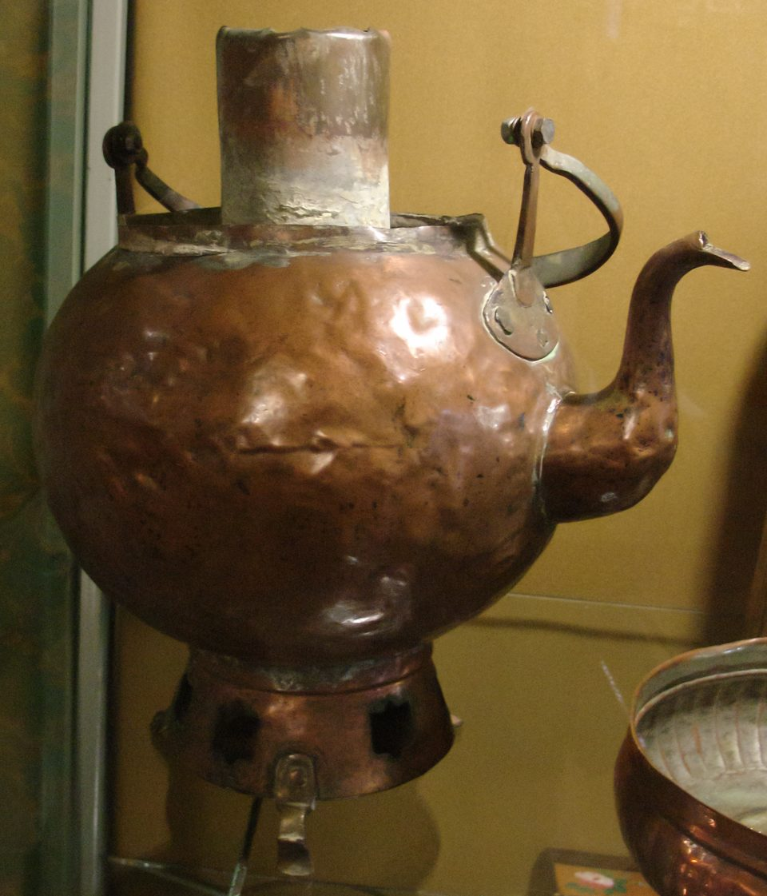

От медного кипятильника на Урале — к тульской фабрике
Читается подряд. Нажми на удар — откроется подробный разбор с источниками.
До самовара горячее питьё на Руси грели в сбитеннике — медном сосуде для сбитня, напитка на мёду.Узнать подробнееСвернуть
«На Руси до самовара был чайник-сбитенник. Потом самовары и чай сбитень вытеснили», — рассказывает заведующий тульским музеем самоваров Сергей Чернов. Где появился сам принцип водогрея, спорят: называют английскую чайную урну, похожие устройства античности, Китай с его чайными церемониями, кочевые степные народы. Но форма и название «самовар», по словам специалистов, сложились в России.

Сбитенник, конец XVIII века, Россия. Медь, выколотка, литьё. Музей «Тульские самовары». Фото А. Ю. Румеги, Викисклад, CC BY-SA 3.0. Источник: Е. Шулепова, «Почему Тула не претендует на звание родины самовара», «Российская газета», 30.09.2026 (слова С. Чернова).
Самый ранний известный самовар сделали не в Туле, а на Урале: в феврале 1740 года его описала Екатеринбургская таможня.Узнать подробнееСвернуть
7 февраля 1740 года на таможню в Екатеринбурге привезли товары купцов Иргинского завода — с Чусовской Курьинской пристани Акинфия Демидова. Везли их «неуказной дорогой», и груз изъяли. В нём были «6 кадей меда, 6 кулей орехов и медный самовар».
Источник: Н. С. Корепанов, «Иргинский завод — родина русского самовара», сборник «Россия и Западная Европа: взаимодействие индустриальных культур. 1700–1950 гг.», Екатеринбург, 1996, т. 1, с. 191–196 (по документу ГАСО, ф. 24, оп. 1, д. 903, л. 710).
Таможенники записали самовар с весом и ценой: медный, лужёный, 16 фунтов, 4 рубля 80 копеек.Узнать подробнееСвернуть
«Самовар с прибором медный, луженый, весом 16 фунтов, заводской собственной работы ценою в 4 рубля 80 копеек».
16 фунтов — около 6,5 килограмма. «Заводской собственной работы» значит, что самовар сделали на самом Иргинском заводе. В ноябре 1744 года этот самовар, «луженый на обе стороны», всё ещё лежал на таможне, и им заинтересовалась Тобольская губернская канцелярия.
Источник: Н. С. Корепанов, 1996 (ГАСО, ф. 24, оп. 1, д. 903, л. 710; д. 1036, л. 1022).
Эту запись нашёл свердловский историк Анатолий Козлов, а разобрал её в 1996 году Николай Корепанов.Узнать подробнееСвернуть
Документ первым обнаружил доктор исторических наук А. Г. Козлов (1925–1984) незадолго до смерти. О находке написал журналист Ю. В. Липатников в журнале «Уральский следопыт» (1985, № 2). В 1996 году историк Н. С. Корепанов разобрал находку в докладе на конференции в Нижнем Тагиле. В том же 1996 году в России отмечали 250-летие самовара: за точку отсчёта, по предположению Корепанова, взяли два самовара в описи Онежского монастыря 1746 года, а родиной первых самоваров называли Тулу.
Источник: Н. С. Корепанов, 1996, с примечаниями.
Иргинский завод купцов Осокиных стоял в Кунгурском уезде. Медную посуду там начали делать в 1729 году.Узнать подробнееСвернуть
Право построить завод двоюродные братья Пётр и Гаврила Осокины получили в феврале 1728 года. Первую медь Иргинский завод дал в декабре того же года. Котельник Степан Логинов, присланный в 1730 году от Казанского бергамта, шесть лет учил ремеслу девятерых учеников. В описи изделий за 1730–1734 годы — котлы, кунганы, кружки, лохани, чайники. Самовара в ней ещё нет.
Источник: Н. С. Корепанов, 1996 (ГАСО, ф. 24, оп. 1, д. 575).
Зачем иргинцам самовар? Историк предполагает: как походный кипятильник, которому не нужны ни печь, ни костёр.Узнать подробнееСвернуть
Жители завода были почти сплошь старообрядцами из Нижегородской губернии. В 1736 году, во время башкирского восстания, мастеровые Иргинского завода почти всем составом ушли в Кунгур записываться в «вольницу» — казачьи сотни против повстанцев. «Остаётся предположить, что тогда и родилась идея удобного в походных условиях, компактного, автономного кипятильника, не зависящего ни от печки, ни от костра», — пишет Корепанов. Это гипотеза, а не факт из документа.
Источник: Н. С. Корепанов, 1996.
Самовар ехал на таможню вместе с мёдом, а не с чаем: мёд был основой сбитня.Узнать подробнееСвернуть
«Раскольники не могли использовать своё изделие для чаепития», — замечает Корепанов: в 1740 году самовар попал в Екатеринбург «вместе с медом — основой для варки сбитня». Чайным прибором самовар стал позже.
Источник: Н. С. Корепанов, 1996.
Вскоре самовары появились и у Демидовых: на их Суксунском заводе в 1740-е годы работала самоварная мастерская, а с 1750 года самовары делали уже фабрично.Узнать подробнееСвернуть
Связать Иргу и Суксун, по Корепанову, мог Родион Набатов. Он был приказчиком у Осокиных, а в 1741 году перешёл на службу к Акинфию Демидову. «Может быть, именно Акинфий Демидов первым реально оценил изобретение иргинских мастеров», — пишет историк. В начале XIX века Суксунский завод и местные кустари делали до 60 тысяч самоваров в год.
Источники: Н. С. Корепанов, 1996; «Откуда есть пошёл русский самовар», «Наука и жизнь».
Тула взялась за самовары позже Урала. Оружейникам там разрешали делать на продажу и мирные вещи.Узнать подробнееСвернуть
Казённые оружейники Тулы, «казюки», получили право делать «партикулярные» изделия для вольной продажи. Самовары в конце XVIII века были делом новым и прибыльным: фабрики для них работали только в Суксуне, Нижнем Тагиле и Москве. «Туляки самовары начали делать лет на 10 позже, чем уральцы», — говорит Сергей Чернов. Отец будущих фабрикантов, оружейник Фёдор Иванович Лисицын, с детства учил сыновей делать медную посуду.
Источники: Л. В. Бритенкова, «Лисицыны. Первые самовары в Туле», Музей самоваров и бульоток; «Самовар братьев Лисицыных», там же, 2024; «Российская газета», 30.09.2026.
В 1778 году Иван и Назар Лисицыны открыли первую в Туле самоварную фабрику — при жилом доме.Узнать подробнееСвернуть
Помещение было длиной около 15 метров и шириной чуть больше 5,5 метра. Кузница с двумя горнами, для пайки самоваров и для литья, стояла отдельно во дворе. «Фабрикой-то назовёшь с трудом», — пишет историк Людмила Бритенкова. В 1823 году фабрика перешла к сыну Назара Никите. Он писал:
«Показанная фабрика построена в 1778 году с дозволения начальства покойным родителем моим Тульским купцом Назаром Федоровичем Лисицыным на собственный капитал и земле, а по смерти его досталась по наследству мне».
Источники: Л. В. Бритенкова, «Тульские самоварные фабриканты — продолжатели дела Суксунского завода Демидовых», «Тульский краеведческий альманах», 2012, № 9; «Самовар братьев Лисицыных», Музей самоваров и бульоток, 2024.
В 1803 году у Лисицыных было 26 наёмных рабочих, а их самовары продавали от Нижнего Новгорода до Бухары.Узнать подробнееСвернуть
Фабрика делала не больше 650 самоваров в год, и только половина продавалась в Туле. В Нижнем Новгороде у Лисицыных была своя лавка в Гостином дворе. В музее-заповеднике Бухары хранится самовар с клеймом «Иван Лисицын в Туле. 1810 год». До начала 1810-х годов братья работали вместе, потом разделились, и у каждого появилось своё клеймо. Фабрика прожила почти сто лет, до конца 1860-х.
Источники: Л. В. Бритенкова, «Лисицыны. Первые самовары в Туле»; «Самовар братьев Лисицыных», Музей самоваров и бульоток, 2024.
Примеру Лисицыных последовали другие туляки: в 1803 году в Туле было 8 самоварных фабрик, в 1850-м — 28.Узнать подробнееСвернуть
В 1785 году открылась фабрика Морозова, через два года — Фёдора Попова, в 1796 году — Михаила Медведева, потом Дементия Маликова. В 1850 году 28 тульских фабрик выпускали вместе 120 тысяч самоваров в год. Сначала тульские самовары походили на уральские, потом появились свои формы — «бочонок», «жёлудь»; всего в Туле делали больше 150 видов самоваров. А к концу XIX века уже суксунский мастер Дмитрий Утемов ставил на свои самовары клеймо «Утемов в Туле».
Источники: Л. В. Бритенкова, «Тульские самоварные фабриканты — продолжатели дела Суксунского завода Демидовых», «Тульский краеведческий альманах», 2012, № 9; Л. В. Бритенкова, «Лисицыны. Первые самовары в Туле»; «Откуда есть пошёл русский самовар», «Наука и жизнь».